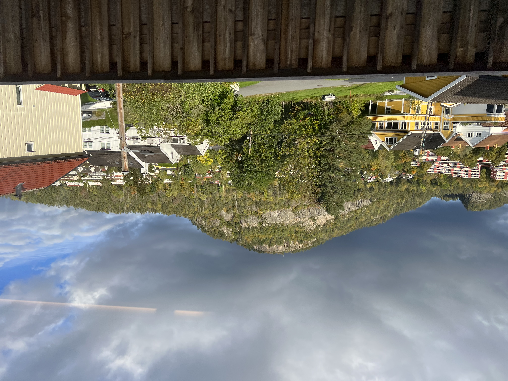
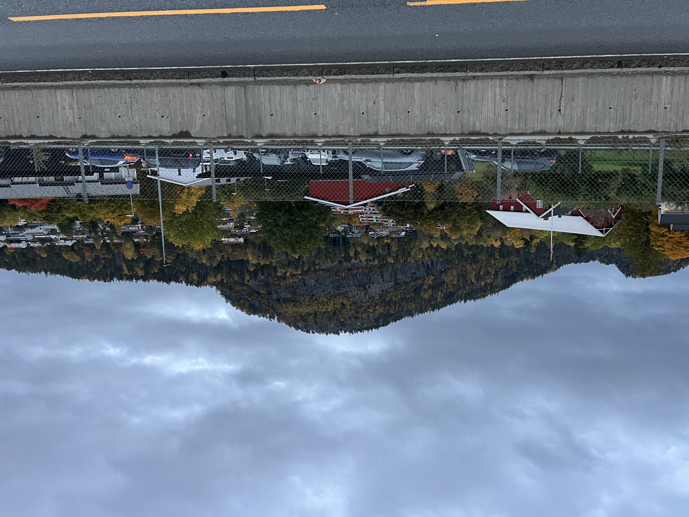
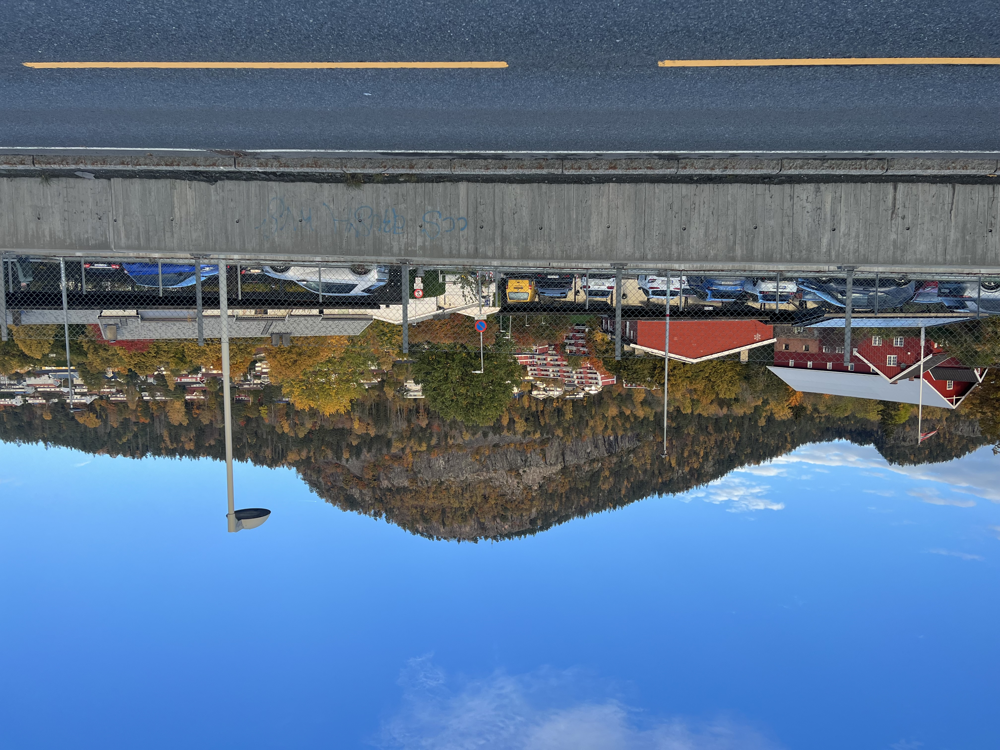
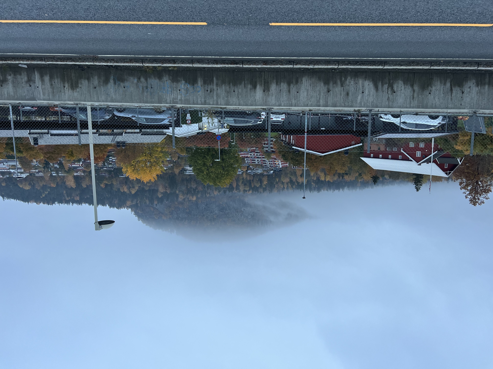
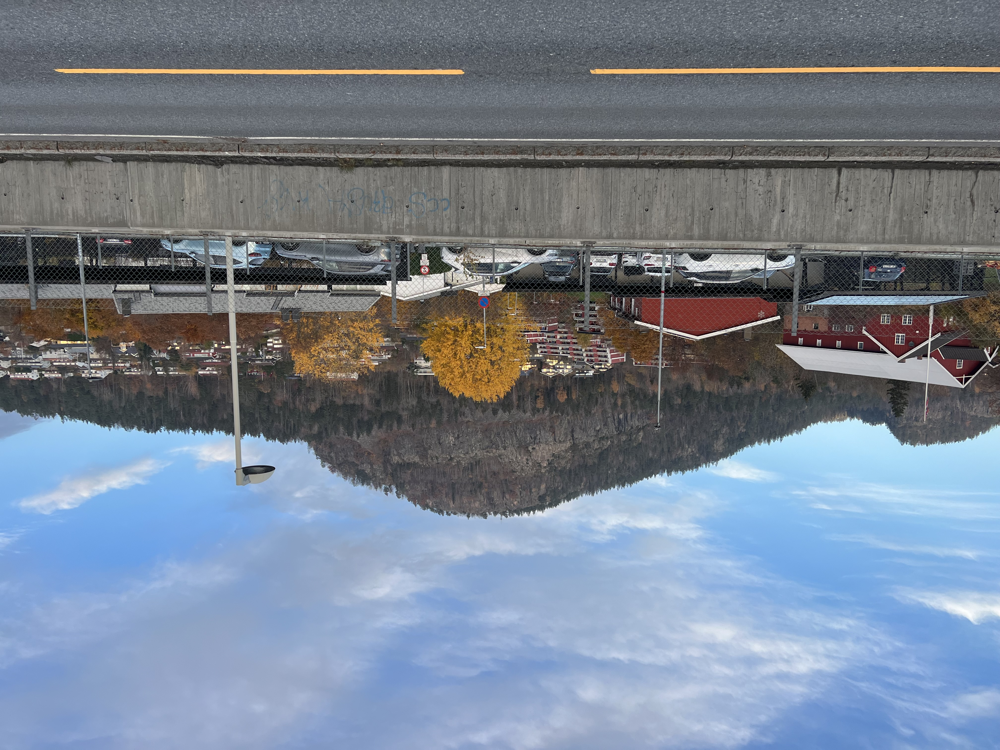

Hei og velkommen! I've always wanted a terrible html website (à la Space Jam and the Heaven's Gate cult - two things commonly referred
to in the same sentence) and so here's my attempt to document my year abroad in Norway. Enjoy :D
Fall is quickly turning to fell and the research that brought me out to Norway is beginning to get real. My work focuses on the use of electronic
monitoring (EM) in Norway, a type of criminal sentence that, here, is an alternative to prison given to people sentenced for a period of six months
or less. Though this length sounds low, it incorporates a surprisingly large proportion of cases; about 80% of all criminal sentences in Norway are a
year or shorter. Typically, serving a sentence on EM means being tracked through an ankle monitor. With this device on, the person wearing it is only
allowed to be at work or at home, with a limited number of hours for errands or social activities also granted per week. The idea behind EM (besides
that it’s cheaper for the government than housing and feeding someone in a prison) is that it removes structural barriers to reentry by allowing
people to keep their jobs, maintain relationships with their family and friends, and generally get to participate in a limited way with society at
large. What I’m studying is how EM changes the pains associated with being incarcerated, and whether EM sets people up better for long-term personal
change than a sentence in a prison. This is particularly interesting in a country like Norway, where the prisons are often described as being better,
if not at least more humane, than those in the US.
All of this is to say this past week I had my first visit to a probation office, the side of the justice system that controls any type of legal
restrictions put on people outside of a prison setting. This particular office represents the greater Oslo area, and in addition to at another office
in Drammen, a town of 100,000 on the other side of the fjord from Oslo, these will be where I conduct interviews with probation officers and people
incarcerated through EM starting as soon as this next week.
There are definitely some nerves associated with kicking off a project that I first applied to over a year ago now (!!), and with it come existential
thoughts about how my work can best make a positive impact. Without getting too into the weeds, I always try to keep a balance with this type of work
in figuring out both what the best version of a program is, and also whether the program itself is actually useful. In other words, I want to figure
out what the best, most productive, version of EM looks like, but also critically evaluate whether EM actually gives some benefit to those
incarcerated. At times, making those judgements can feel like a lot of pressure. People have complex experiences, to say the least with something
like a criminal sentence, and things rarely fall into being squarely “good” or “bad”. That also though underlines the importance of learning from
people impacted directly: the real knowledge of EM will come from the the lives of the people I’m interviewing.
More generally, since I’ve been working within the Norwegian Correctional Service, I’ve found myself reflecting more on the justice system in the US. Why
is it that the US incarcerates so many more people than anywhere in Europe? Why are sentences so much longer and prisons much more punitive in
nature?
One instinct might be to suggest that there are different cultural values, and that people in Scandinavian countries by and large believe more in the
possibility of rehabilitation for people who committed crimes. This view is reflected in one very influential criminal justice article (by John
Pratt, this article, published in 2008, is part of the reason why Norway gets international attention for their prison system), which suggests that
Scandinavian countries’ long economic history of being predominately small-scale farmers, without large-scale industrialization or a strong upper
class, promoted a uniquely strong cultural value of equality. Pratt suggests that this value means that criminals are seen as less “other” from
society at large, and instead as regular people who made poor choices and possibly faced adverse circumstances themselves. In other words, crime is
seen as something that can be rehabilitated, and is not the result of some inherent moral difference.
However, both academically and anecdotally, it might not be so simple. A different study of how public opinion (I had to fight through the back channels
of the ASU library to get access to this article - good luck) drives crime policy found that people surveyed across a range of countries across the globe
similarly condemned perpetrators of criminal acts, lamented their country for being too lenient on crime, and called for longer criminal sentencing.
Similarly, while people I talk to at KRUS support Norway’s approach to corrections, others I’ve met in the country feel very different. Just recently
while I was getting my hair cut, when the stylist asked what I did, I said I researched Norwegian prisons and she corrected me to say “You research
Norwegian hotels”. Others I’ve talked to similarly criticize the prisons here for “giving people whatever they want”, and criticize the justice
system for not stopping what is a growing (albeit extremely small compared to US standards) drug and gang problem in Oslo. Even people at KRUS have
mentioned they’re having a harder time recruiting and maintaining prison officers, a phenomenon they say is partially due to media coverage that is
critical of the service’s ability to deter crime. And this is from a correctional service that regularly trains other countries from around the globe
(including some states in the US) to show how they do things! In other words, culture feels like an incomplete measure of what actually happens on a
policy level - particularly when public opinion is rarely uniform.
There are many more levels to this debate, but I’ll save those for another blog post to come soon. In the mean time, please accept these pictures of
Kolsåstoppen’s trees changing colors over the course of this month (all taken around 5pm too) to balance out all the dense criminology talk. Sharing my first
few glimpses of Norwegian winter and experiencing the election from abroad will be soon to come!
|  |  |  |
| September 27th | October 7th | October 11th |
|  |  | |
| October 18th | October 25th |
Two months I’d been in Norway, but I’d never felt more like just another tourist. This past week, I had the chance to explore the fjords of Flåm (the
Norwegian å is pronounced most like the oa in boat - so pronounced like floam), and waiting in line for the final leg of the journey in the train
station, nearly every other person was American. One couple identified my Royals hat and introduced themselves as from Iowa, while a few feet
back a man stood in New York Giants gear. This was not the place to spot Vålerenga hockey jerseys. Ahead of me, the person behind the counter of
the station’s small cafe, selling what else to American tourists but hotdogs, defaulted to English at the beginning of each transaction. I felt
some need to distinguish myself in some way, to prove what Norwegian mettle I’d gathered in the past couple months, but it wasn’t going to be to
much avail. This scenery was just as new to me as it was to the rest of the room.
Back during one of my first weeks in Norway, my roommate Sebastian and I hiked up in the Holmenkollen neighborhood of Oslo, a scenic mountain area
that is best known by the massive ski jump ramp that juts out from the cliff and is visible from large chunks of the city. As we took the subway
back down into sentrum (the Norwegian word for the city center), I found myself glued to the window watching us descend over the vast spread of
houses, lakes, and open fields that dotted the valleys of the Oslo fjord. I made some comment about the view to Sebastian, and he looked up to
peek outside the window at what I was watching. “Oh yeah it looks about normal”, he replied.
|
|
| The ski jump ramp, one of the wilder Norwegian sports traditions | Said "normal" view |
This was about more of the same. As our train descended from Myrdal down into Flåm, a harrowing journey along the steepest railway in Northern Europe
(a vague geographical region maybe but still cool), I was entranced by the many rapidly changing landscapes: shining snowcapped mountaintops - in
mid October no less, stunning river valleys, and orange and crimson forests that shielded the intensity of the 1000 meter drop beneath us. Each
turn of the train gave a new, equally exciting, configuration of the elements and the hour-long journey disappeared in an instant. That was, save
for a genuinely bizarre train stop to watch a woman in a dress dance along a waterfall (Huldra the forest spirit, with accompanying merch at the
gift shop below! Norway is learning from the American school of promotional tie-ins).
Equally fascinating to me as the scenery was the Norwegian - likely one of very few on the train besides the train staff - sitting opposite from my
seat that seemed to be leading some sort of biking tour. While many on the train oohed and aahed at the spectacular views, myself going as far to
take advantage of empty seats and switch sides of the train to whatever was most interesting at the moment, the guide sat peacefully back in her
seat and didn’t join in craning her neck to see each passing vista. Though she had certainly been on the train ride dozens of times before, the
idea of such a world-renowned site being routine viewing still interests me, and has brought me to reflect again on what I previously mentioned
had become routine for me in Oslo. Not that I could fully blame here for skipping the waterfall dance routine stop though. It has, though, made
me wonder how different my first desert sunset will look back in December nearly six months removed from Phoenix for the first time in a decade.
It will be a special feeling to take in the cacti and mountains of Phoenix with fresh eyes once again.
 |
 |
 |
| Snow very present getting on the train to Flåm | Waterfall! ft. Huldra | Another waterfall (casual) out the window |
The sensation of being in tourist country only continued in the town of Flåm itself. Though Oslo is inarguably a big city, and one as a tourist
that’s worth seeing at least for a couple days (so come visit), it’s hardly a tourist hotspot when it comes to Norway as a whole. Many of the
primary draws in the city are either not as unique compared to other countries (like some of the art museums - though The Scream is worth the
hype) or not specifically unique to Oslo within Norway (such as some of the outdoor activities). Many of these attractions in Oslo also just
appeal to locals as well, meaning that usually when I’m out doing something new, I’m still surrounded by Norwegians. Flåm though is only a short
train ride from the tourist hotspot of Bergen, and also is a cruise ship stop for people traveling up the coast of Norway, as I learned when the
town briefly became inundated with camera-wielding Germans de-boating for an afternoon. All this is to say in any given store I was subjected to
viking hats, viking magnets, viking shirts, and also a large collection of wooden troll type figures?? All these were things I’d seen little to
none of in Oslo. Many stores also sold moose and whale jerky, “Norwegian specialties” much in the way that Phoenicians have a steady diet of
scorpion lollipops and cactus fruit jelly.
 |
 |
| Fall very alive in Flåm | And the view later from our fjord cruise |
Having built up my own perceptions of the country the last couple months, seeing it juxtaposed with the experience of stopping by for a weekend
really deepened my appreciation for getting to immerse myself in the country for such a long period of time. Not that there’s anything wrong with
a weekend in Flåm though - the fjord and accompanying cruise and waterfalls truly were unlike anything I’d seen before, and my week as a whole is
deserving of its own post. Norway is a special place, and is somewhere I’m more than happy to see with the fresh eyes of a tourist.